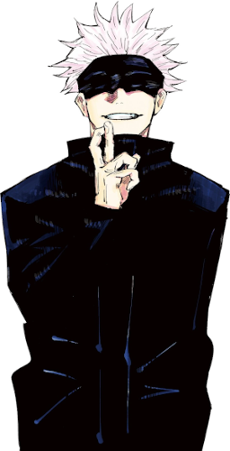
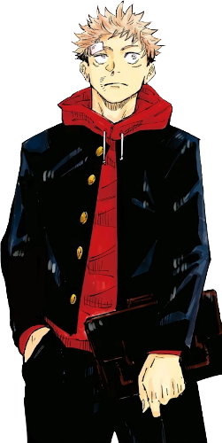
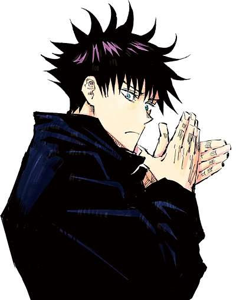
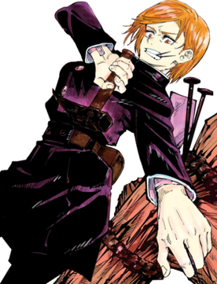

Satoru Gojo é um dos protagonistas da série Jujutsu Kaisen. Ele é um feiticeiro jujutsu de grau especial e amplamente reconhecido como o mais forte do mundo.

Yuji Itadori é o protagonista principal da série Jujutsu Kaisen. Após ingerir um dos dedos de Sukuna, ele se tornou seu receptáculo e passou a estudar na Tokyo Jujutsu High.

Megumi Fushiguro é o deuteragonista da série Jujutsu Kaisen. Ele é um feiticeiro jujutsu de grau 2 e estudante do primeiro ano na Tokyo Jujutsu High.

Nobara Kugisaki é a tritagonista da série Jujutsu Kaisen. Ela é uma feiticeira jujutsu de grau 3 e estudante do primeiro ano na Tokyo Jujutsu High.
Voltar ao topo